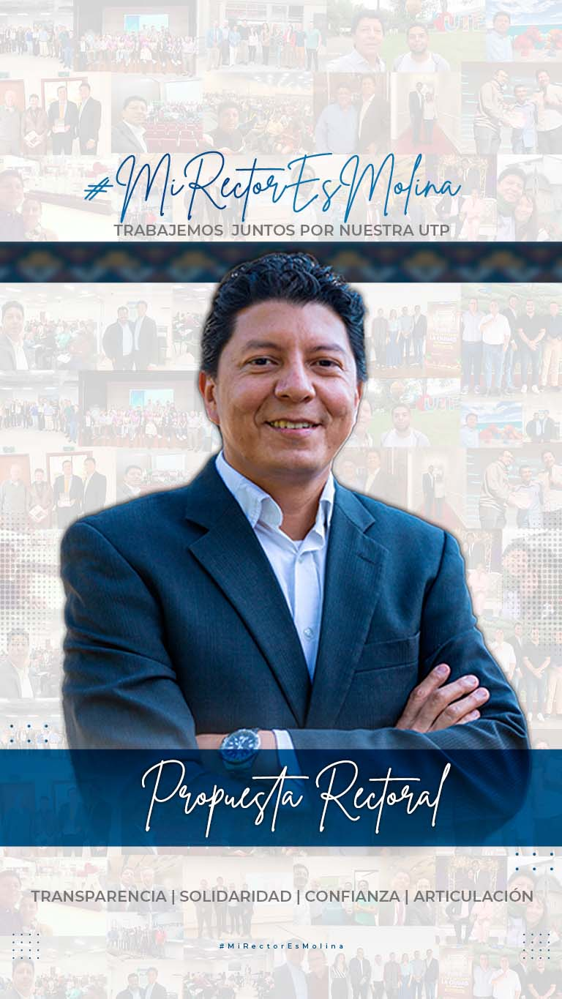
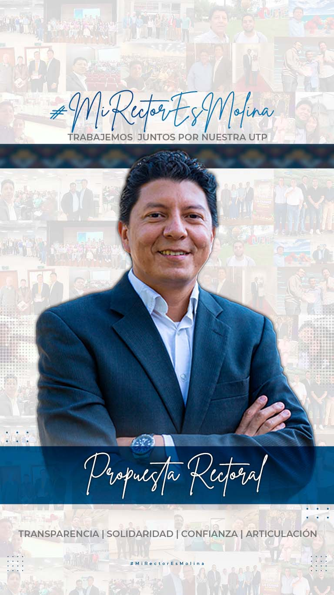

Se cuenta con “Plan Maestro de Planta Física (PMPF) UTP 2018-2032”, que aporta información orientadora. Se propone:
Crear una unidad de gestión de recursos públicos y privados y de la extensión institucional. De esta manera es posible incrementar infraestructura científica, física y tecnológica.
El PMPF considerará las prioridades académicas y administrativas, permitiendo la retroalimentación y proponiendo al Consejo Superior las oportunidades de mejora en materia de costos, transparencia, idoneidad y eficiencia. Se enfatizará en laboratorios e infraestructura tecnológica al servicio misional de la UTP.
Priorizaremos la modernización de la infraestructura física que soporta la oferta de la alimentación en la institución, procurando su ampliación y mejora.
Mejorar los procesos administrativos mediante uso de TIC e industrias 4.0 y se ofrecerán herramientas de soporte a la decisión basado en datos. Modernizar especialmente la gestión de nómina; los aplicativos necesarios para soportar el ejercicio de las decanaturas; consejos de fac.; y el sistema de alertas académicas. El equipo de la división de Gestión Tecnológica tendrá mejoras en condiciones laborales para evitar rotación excesiva.
Trabajaremos de manera articulada junto a bienestar universitario, el cabildo indígena y el consejo académico para consensuar los áspectos relacionados con el proyecto de la Casa del Pensamiento .
Se debe priorizar la formulación de un proyecto de infraestructura que vele por garantizarle espacios idoneos que acojan a las y los Egresados UTP , ofertando espacios para la oferta cultura, académica y para el trabajo colaborativo y de co-creación.
Se debe trabajar en la formulación de un proyecto de infraestructura que garantice espacios para el desarrollo de las iniciativas culturales y artísticas de los procesos de estudiantes, profesores y trabajadores.